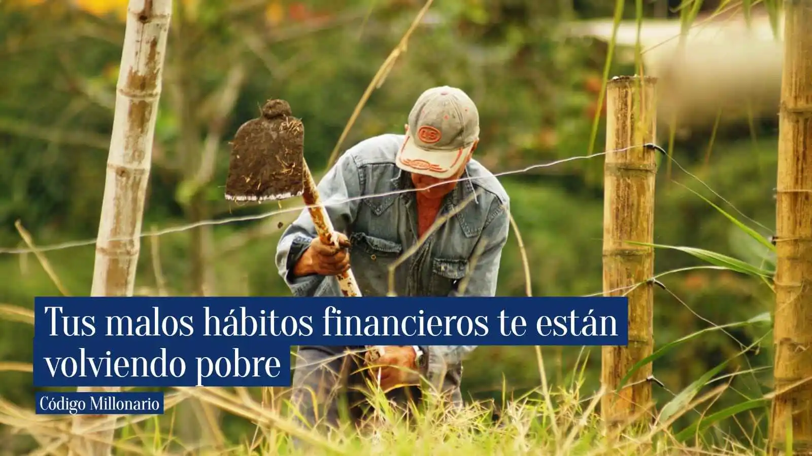

Por Francisco Urrego
Actualizado el 09 ene 2026 | 21:09 h
⏱ 5 min lectura

- 1. Cómo transformar tu economía en 30 días con hábitos sencillos
- 2. HÁBITO 1: No pierdas ni un peso, anótalo todo
- 3. HÁBITO 2: Separa tu ahorro apenas recibas dinero
- 4. HÁBITO 3: Evita las compras impulsivas con la regla de las 48 horas
- 5. HÁBITO 4: Aprende a usar la deuda con inteligencia (o evítala)
- 6. HÁBITO 5: Deja de improvisar con tu dinero
- 7. Tu dinero debe obedecer tus decisiones, no tus impulsos
Cómo transformar tu economía en 30 días con hábitos sencillos
Hoy quiero exponer una forma real y actual de cómo ver el dinero y usarla a tu favor para incrementar tus posibilidades de éxito y mejorar tus finanzas en Colombia. ¿Sientes que el dinero se te va y nunca logras avanzar? ¿Terminas cada mes preguntándote a dónde fue tu sueldo? No estás solo: hay muchas personas que se hacen estas y otras preguntas cuando ven que su dinero se esfuma y no saben a dónde fue.
Ahora bien, mejorar tus finanzas no siempre significa ganar más, como muchos piensan. Si no puedes manejar tus finanzas con un dólar, menos lo harás con un millón. La clave principal está en cambiar hábitos destructivos que, sumados, generan un impacto enorme en tu vida económica y favorecen tu dinero.
Una noticia favorable es que no necesitas meses para ver resultados: 30 días son suficientes para notar control, estabilidad y una mejor relación con tu dinero. En este artículo te explico cinco hábitos simples pero poderosos que puedes aplicar desde hoy para transformar tus finanzas en solo un mes.
HÁBITO 1: No pierdas ni un peso, anótalo todo
Independientemente de cuáles sean tus gastos, el primer paso para mejorar tus finanzas no es ahorrar más si no quieres, sino conocer exactamente a dónde se va tu dinero. Este paso es más importante de lo que la mayoría cree.
Muchas veces creemos que gastamos poco, porque da la impresión de que no se siente la gota que cae cuando se derrama el vaso. Sin embargo, al revisar tus gastos diarios, descubrimos pequeñas fugas que pasan desapercibidas.
Mi sugerencia para ti es que, durante 30 días, anotes todo: desde las compras grandes hasta el café más pequeño, sean necesidades o no. Es importante que lo tengas todo en cuenta. La intención aquí es registrar cada movimiento de dinero, tanto entradas como salidas; te sorprenderás a fin de mes.
Este hábito te ayudará a identificar patrones de gasto, reducir gastos innecesarios y tomar decisiones financieras inteligentes basadas en datos reales, no en suposiciones ni especulaciones.
El éxito financiero empieza con un simple hábito: anotar todo.
¿Qué anotar?
- Gastos grandes
- Pequeñas compras
- Recargas
- Comidas
- Suscripciones
- Compras impulsivas
Puedes registrarlos en:
- Nequi: categorías automáticas
- Ualá: control de gastos
- Una app de finanzas
- Un cuaderno
- Google Sheets
Beneficio: En 7–10 días ya sabrás qué recortar y qué mantener, y al final del mes tendrás un mapa completo de tu vida financiera.
HÁBITO 2: Separa tu ahorro apenas recibas dinero
Es muy común recibir el pago y emocionarse con tu dinero. Esto puede cegar a muchos, una emoción que los lleva a sentirse más confiados y tomar decisiones apresuradas acerca de su dinero. Un pago no te hará rico; sin embargo, lo que muchos no analizan en realidad no es el pago, sino la acción detrás de él.
Y con eso me refiero a la acción del gasto: quien gasta dinero de su sueldo sin medir las consecuencias, gastará cualquier cantidad mayor sin problema.
La clave para ahorrar no es la cantidad que entra, sino el comportamiento y la acción consciente de tomar decisiones para el éxito. Si acostumbras a tu cerebro y dopamina a gastar poco de forma recurrente, cuando tengas más dinero harás lo mismo y será un comportamiento sin fin. Por eso vemos a gente que gana mucho dinero y, aun así, no llega a fin de mes. Desde hoy aplica esta regla:
La libertad financiera empieza guardando antes de gastar.
Cada vez que recibas dinero, sin importar cuánto sea, ¿qué puedes hacer?
- Separa un porcentaje (5 %, 10 %, 20 %) Máximo 50 % en casos especiales o más.
- Mándalo a una cuenta aparte, bolsillo o caja
- No lo mezcles con el dinero del día a día
Apps como Nequi, Daviplata y Ualá te ayudan mucho porque permiten aislar el ahorro.
Beneficio: En 30 días verás un ahorro real que antes no existía.
HÁBITO 3: Evita las compras impulsivas con la regla de las 48 horas
Una gran mayoría de personas vive esta situación de forma estereotipada, una acción que puede llegar a ser más destructiva que cualquier otra cuando involucra sentimientos. ¿Quién no quiere comprarse buena ropa, zapatos u objetos? De hecho, todo el mundo quiere verse bien y vivir bien. El problema real surge cuando ya no es necesario hacerlo y, aun así, se continúa con esta práctica.
Las compras compulsivas son esos momentos en los que compramos sin pensarlo demasiado, casi por impulso, aunque no lo necesitemos realmente. A veces ocurre después de un día difícil, al ver una oferta irresistible o simplemente por hábito.
Todos, en algún momento, hemos sentido ese impulso de comprar algo que “nos hará sentir bien”, y es completamente normal. Reconocerlo es el primer paso para entender nuestros hábitos y tomar decisiones más conscientes con nuestro dinero.
Comprar por impulso alivia el momento, pero entenderlo cambia tu futuro.
Espera 48 horas antes de comprar
Durante ese tiempo, pregúntate:
- ¿Lo necesito?
- ¿Puedo vivir sin esto?
- ¿Lo compraría si no estuviera en promoción?
- ¿Ese dinero lo puedo usar para algo más importante?
Beneficio: Notarás que ahorras muchísimo porque la mayoría de compras impulsivas desaparecen al esperar.
herramientas financieras encontrarás recursos diseñados para ayudarte a tomar mejores decisiones en el momento justo. Desde evaluaciones para entender tu relación con el dinero, hasta calculadoras y simuladores que te muestran las consecuencias reales de gastar hoy o invertir mañana. Usarlas te permite pasar del impulso a la claridad, sin teorías complicadas.
HÁBITO 4: Aprende a usar la deuda con inteligencia (o evítala)
Siempre nos ha dicho, que la deuda es mala, porque roba tu libertad y te mantiene esclavo de alguien, y que es buena por que puedes usarla para invertir y sacar rentabilidad del dinero de alguien más, sin embargo, la deuda no es buena ni mala por sí sola; todo tiene sus matices y depende del contexto en si y para que se uso ese dinero prestado.
Muchas personas se endeudan para cubrir gastos inmediatos, sin analizar el impacto a largo plazo, y ahí es donde el dinero empieza a volverse una carga. Usar la deuda con inteligencia significa entender que no todo lo que deseas hoy debe pagarse con dinero que te costara el futuro.
Endeudarte sin pensar resuelve hoy, pero te cobra mañana.
Antes de endeudarte, pausa y analiza
Durante ese momento, pregúntate:
- ¿Es una necesidad real o solo un deseo?
- ¿Podría pagarlo en efectivo si espero un poco?
- ¿Esta deuda mejora mi situación o solo me da alivio momentáneo?
- ¿Puedo pagarla sin afectar mis gastos básicos?
Beneficio: Evitas deudas innecesarias y mantienes tu estabilidad financiera a largo plazo.
HÁBITO 5: Deja de improvisar con tu dinero
Algunas personas no ven la realidad de tomarse en serio su economía sino hasta que llegan a ser ancianos. Son del tipo de personas que dicen: “No sé cuándo moriré, mejor disfruto ahora”, y luego, vaya sorpresa, viven hasta los 70 u 80 años, totalmente arruinados y sin respaldo económico.
Estas personas suelen improvisar con el dinero. Mientras hay empleo, buen sueldo o cierta estabilidad, esa improvisación se siente inofensiva. Sin embargo, a largo plazo, es una de las principales razones por las que no se ve progreso financiero en la mayoría de la gente. Gastar “sobre la marcha”, decidir en el momento y confiar en la memoria crea desorden, estrés y decisiones poco conscientes. El dinero necesita dirección, no suposiciones.
El dinero sin dirección te mantiene en la rueda
Es como elegir qué quieres ser o hacer en la vida y seguir ese camino. Tu dinero también debería tener un propósito, una idea clara a seguir, y no simplemente llegar, gastar, volver al trabajo y continuar con la rueda del hámster hasta envejecer. En lugar de reaccionar cada vez que surge un gasto, establece reglas simples que guíen tus decisiones.
No se trata de controlar cada peso, sino de saber qué sí es prioridad, qué se puede dejar pasar y qué puede esperar. Cuando dejas de improvisar, tu dinero empieza a trabajar con orden y tu mente descansa.
El orden financiero no nace del control excesivo, sino de la claridad.
Beneficio: Reduces errores, tomas mejores decisiones y avanzas con mayor seguridad sin sentir que el dinero se te escapa.
Tu dinero debe obedecer tus decisiones, no tus impulsos
Al final del día, la última decisión siempre la toma el lector sobre qué hacer y qué no hacer con su dinero. Nadie puede obligarte a cambiar tus hábitos financieros, pero sí puedes elegir ser más consciente de cada decisión que tomas. Estos cinco hábitos no buscan limitarte, sino darte claridad y control para que tu dinero deje de ser una fuente de estrés y empiece a trabajar a tu favor.
Aplicarlos no requiere ganar más ni hacer sacrificios extremos. Se trata de pequeños cambios diarios que, con el tiempo, generan resultados reales. Si decides ponerlos en práctica, notarás que tus finanzas pueden mejorar más rápido de lo que imaginas, simplemente porque ahora tus decisiones tienen intención y dirección.
- Registrar tus gastos
- Ahorrar primero
- Evitar compras impulsivas
- Controlar el uso del crédito
- Tener un presupuesto simple
Si los aplicas durante 30 días sin fallar, verás una diferencia real en tu bolsillo, en tu tranquilidad y en tu futuro financiero.
Recuerda
No necesitas más dinero, necesitas mejores hábitos. Empieza hoy y nota la diferencia en solo un mes.
Si llegaste hasta aquí, ya diste el primer paso: cuestionar tus hábitos. Ahora puedes apoyarte en las herramientas para convertir estas ideas en acciones reales. No son teorías ni promesas vacías, son recursos prácticos para evaluar tus decisiones, medir tu progreso y darle dirección clara a tu dinero.
Código Millonario recomienda: